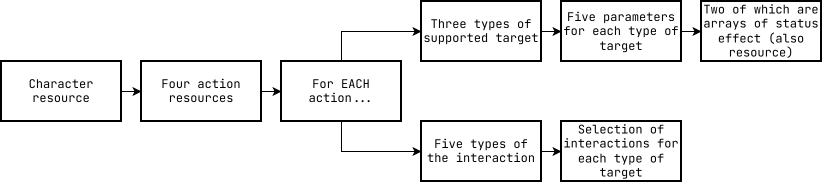
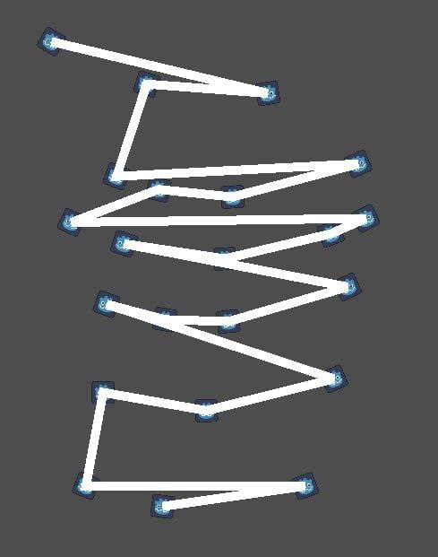
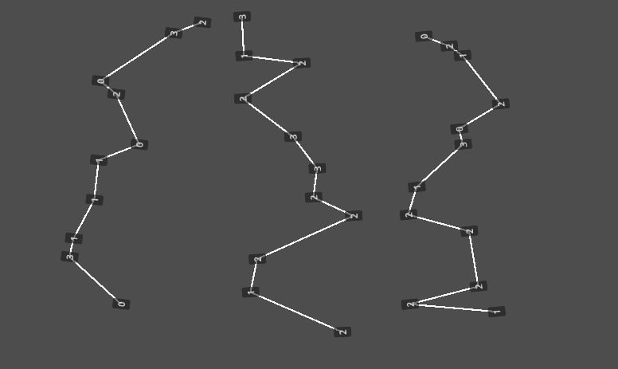

this was the first project i ever attempted to make in godot.
while it was something that i couldn't build - i didn't care.
expanding idea bit by bit with hope that one day it will become reality.
it's when i learned a harsh truth. i could never be a solo dev.
this project is not too ambishious for a solo dev. with time, dedication
and investment it could be build by one person. but my inability to do anything
art/sound related locked gates of solo development with seven locks
under AES-128 encryption.
while this project remains as "Magnum Opus",
i learned a lot about godot and build a couple of interesting systems,
which i will cover in the section below
development
during developement i learned to iterate. i think that's the most important lesson
"reach the point" gave me. when i was stuck, i would start from scratch and witness
incredible improvements.
new ways to interact with godot. code structure improvements. optimizations.
smarter usage of classes. utilization of tools provided.
through this process of iteration i've build a couple of self-sufficient systems
battle
my favorite thing about the battle system is that i dropped it completely. while it held
structural depth and decently implemented, usability was abyssmal. core reason
behind it was resources. they were complicated, that could cover
EVERY POSSIBLE interaction.

this tree of resource was hard to manage and didn't even cover
all possible interactions. so it would probably have to be even bigger.
making these kind of resources is a bad idea. when you want to add
another status effect, you need to create another resource. and when you need to
create an existing status effect with different value, you need to create another resource.
same goes with actions.
bad usage of resources creates so much bloat in your file system and editor. you
may even create identical resources. creating built-in resources
(resources which are stored directly in the scene), causes scenes to load slower.
a better way to do a skill, whould be just creating skill function under the character.
i litteraly don't see any downsides to that. also, i haven't developed new
status effect systems, but it would probably be a
RefCounted object
that would be built in the skill function
map
initially i wanted Slay the Spire style map since i just watched a video on how
StS builds their maps. after some failed attempts all my points connected into
a single path.

this is the actual screenshot i took when this happened. i found it facinating.
"maybe this could work". so changed code, so it would generate less rooms
connected with a single path. created two copies of it and got this

this screenshot is a bit further, but still showing the result i've got. three paths to pick from. what are those numbers though? these are encounters number represent what kind of encounters it will be.
var int_array = []
var level_count = 10
for i in level_count
int_array.append(1)
if is_half_way():
add_safe_zone()
// Other conditions...
it definetly would have been better to first fill array with one's
and after that replace them with other zones. but hey, it's my first code,
don't judge me for mistakes of the past.
anyway, another interesting thing is how i saved these routes.
a bit of context, there are 24 paths to pick from. when players
ends their current route, it becomes locked while remaining 23 paths do not reroll.
paths reroll every cycle, not every run.
so there should be a way to store paths between multiple runs.
since path is
Array[int],
i can staticly store a dictionary with keys being index of the path
and value being Array[int]
belonging to that route. index of the path, that player currently
traversing could also be stored staticly, giving an easy way
to get active path anywhere.